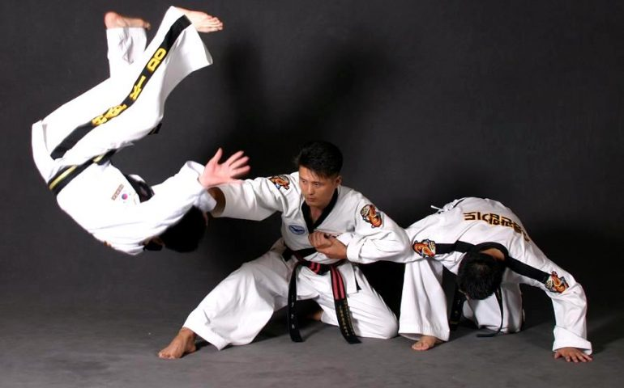

<div class="event-info">
 <div>
 <p>هاپکیدو نوعی هنر رزمی کره‌ای و از انواع دفاع شخصی است. این رشته یکی از تلفیقی‌ترین سبک‌های رزمی محسوب می‌شود که در سراسر جهان و ایران طرفداران و علاقمندان زیادی را به خود جلب نموده است. بنیانگذار هاپکیدو رزمی‌کار کره‌ای چوئی یونگ سول است. وی یکی از هنرهای رزمی ژاپنی به نام دایتو ریو آیکی جوجوتسو را در ژاپن آموخته بود. وی پس از جنگ جهانی دوم به کره جنوبی بازگشته و آموزش هنر رزمی خود را با تلفیق تکنیک‌های رشته‌های ژاپنی جودو (که خود از سبک‌های منشعب شده از جوجیتسو محسوب می‌شود)، کره‌ای تکواندو و تانگ سو دو آغاز کرد.</p>
 
 <p>در هاپکیدو از اطلاعات نقاط حساس عصبی، تکنیک‌های قفل مفصل، انواع فنون گلاویزی و پرتابی، ضربات مشت و لگد و سلاح‌های سنتی از جمله خنجر، شمشیر، طناب، نانچاکو، عصا، بادبزن و انواع چوب برای غلبه بر حریف استفاده می‌شود. نام این رشته مشابه آیکیدو است در حالی که شباهت کمی دارند. بازیگران معروفی مانند جکی چان، آنجلا مائو، کارتر وانگ و دیگران از شاگردان جین پال کیم در هاپکیدو بوده‌اند.</p>
 </div>
</div>